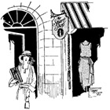
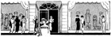

1926—The New-Way Course in Fashionable Clothes-Making
Lesson 49—The Dress Shop
Importance of the Name
It is amazing what a large part the name plays in the success of a business—yet so few people, who start out in business for themselves for the first time, realize it. If the truth could be known, more than one business would be found to owe its success largely to the happy choice of a name.
Think of some of the widely-advertised products you know for instance. Notice how "catchy" the names are—how they remain in your memory. A name may be unusual, different, queer even—but it must be easy to pronounce and easy to remember.
The name for your shop should not be the same as that used by any similar store or establishment in the same town. It should be trade-marked, if it is unusual, for your protection. However, this is not entirely necessary unless you expect to advertise in your local newspapers. You may use your own name, of course, calling your shop the "Grace Frank Dress Shop," or the "Helen Roberts Dress Shop" as the case may be, but it always better to have an odd, attractive name that will suggest the policy of the shop and give to it a certain distinction.
For instance, one little dress shop in a small town which enjoys quite a large and profitable clientele, is known as the "Gown-of-Grace Shop." The first name of the owner happens to be Grace, but here it is used to describe the gowns sold in the shop—graceful gowns. Somehow the name took the public fancy and the shop is extremely popular.
Another descriptive name is "The Live-Model Dress Shop." In this shop, the dresses are displayed not on wax figures, but on live models. The frocks are kept out of sight of the customers, but when they request that they be shown such-and-such a style, one of the models puts that type of dress on and displays it. It is just such a novel idea as this that wins customers.
Names such as "Milady's Dress Shop," the "Shop of Fashion,""Distinctive Styles," etc. are always good. A name like "Le Robe Chic" is not good as it is confusing to pronounce unless one is French and it cannot be as easily remembered as a name like "The Style Shop." A coined name like "Smart-Maid Dresses" or "Nu-Style Shop" is always "catchy" and therefore always good.
In your choice of a name, remember that dignity is important. Do not choose a name that is obviously "made up," obviously forced—like this name we recently saw: "We Serv-U-Fine Shop." Something with the least suggestion of the French, with perhaps a touch of an old-fashioned charm to it; something dignified and attractive, something that is easy to pronounce and easy to remember—that is the kind of a name you should search for. You may not think of it at once. It may require a day—even a week, of thinking. But when you find the right name you will know that the effort was worth while.
Just as a few parting suggestions, "Colonial Dress Shop" carries with it the charm of Colonial days; "The Mode" has a least suggestion of Paris where styles are created; "Georgette Style Shop" also carries with it a suggestion of the French; and "Shop of Beautiful Gowns" is certainly as charming a name as one could hope to find.
But even an excellent name won't bring you success if your location is wrong. Quite important—this business of finding the just-right place for one's shop!
Choosing the Location
The very best place for your dress shop is in that section of the city, or village, where stores cater to the needs of women. For instance, where there is a beauty shop, a large general store, a millinery shop, etc. you can be sure women come to the section during the day. Wherever many women gather, or come to do their shopping, is a good location, provided it is not a "market" section where the streets are untidy and unattractive.
A poor place for a dress shop is in the financial district of the city or town, where only men congregate. The business section, where both men and women pass every day, is good if the store is on the street level and attractive. It is not wise to take a dress shop in an office building, or above the level of the ground, unless one contemplates advertising, or already has a large patronage.
Very often you will find that by taking a shop on a side street, instead of on the avenue, you will save a great deal in the matter of rent. And often the side street location is almost as good a location. This is particularly true in large cities, where rents on the main avenues are exorbitant, but quite reasonable on the side streets that lead on to the avenue.
Always bear display in mind when choosing a location. Do not choose a shop that will not enable you to place model gowns and materials on display so that they will be seen by the passersby—and not just passed by. The windows should be well arranged and attractive. It may be wise to plan to employ the services of a window-dresser to attend to your display, unless you are deft and clever in this matter.
Sometimes large stores lease a part of their floor space to other businesses. Very often a dressmaker is offered a splendid opportunity in this way. She is able to save enough on rent the first few seasons to enable her to branch out later and open a store almost as large as the one in which she has rented space. When renting part of a store in this way, care must be taken to make suitable arrangements for the use of gas, electricity, heat, light, etc.
Many department stores lease quarters to the clever dressmaker who wishes to make frocks for the customers of the store. In this way, she is not only able to serve her own particular customers, but those other customers who come to the store to shop. It is a wise plan for the dressmaker who does not wish to undertake the expense of opening a shop of her own. Different department stores have different arrangements; anyone interested in this plan should consult the manager of the store.
When the home is used instead of a shop, comparatively little expense is entailed. Indeed, we advise the dressmaker who does not have much capital and is not very sure of herself to make dresses and sell them in her home for a little while, until she has gained quite a large patronage and can depend upon her income to cover whatever expenses a shop would entail. Many dressmakers who use their homes instead of shops, put small cards in one or two of their windows with the word "Dressmaker" or "Fashionable Gowns" printed neatly on them.
If you decide to make dresses in your home for awhile, instead of opening a shop, you will be able to do without a great many things that would be absolutely essential if you opened a shop. Printed stationery, for instance, cards, special store furniture, insurance—you have to think of all these things when you open a shop. But if your home is your dress shop, your problem is a very much simpler one.
You should, though, have a clear knowledge of how to run successfully a large dress shop, so that if the occasion every arises for you to operate your own shop, you will be prepared to meet it.
Study the Location
A word of advice is not amiss here regarding care in the choice of location. Do not be mastered by your enthusiasm. So many people, going into business for the first time, are impulsive and they make mistakes right from the start. You can't be sure the location is good just because you happen to see it while a lot of people are passing by. Study the place. Spend a few days there. Watch to see if the same people pass always, or new faces appear. See how many women pass, how many men. Are there homes in the district or just stores. Are the type of women who live in this locality the type who would wear the kind of clothes you are going to make, are they plain, stylish, rich, poor? All these questions must be taken into careful consideration; you must study the subject from all angles, weigh it carefully, and decide only after great consideration.
There is an element of risk in opening a shop, and the risk is greatly increased by the choice of a wrong locality. Stationery, boxes—everything bearing the name and address of the shop, becomes useless when the locality is changed. Therefore be wise; don't be quick and impulsive in your choice. Study the location carefully and choose it only when you are convinced that it is the best locality available for the rent you want to spend.